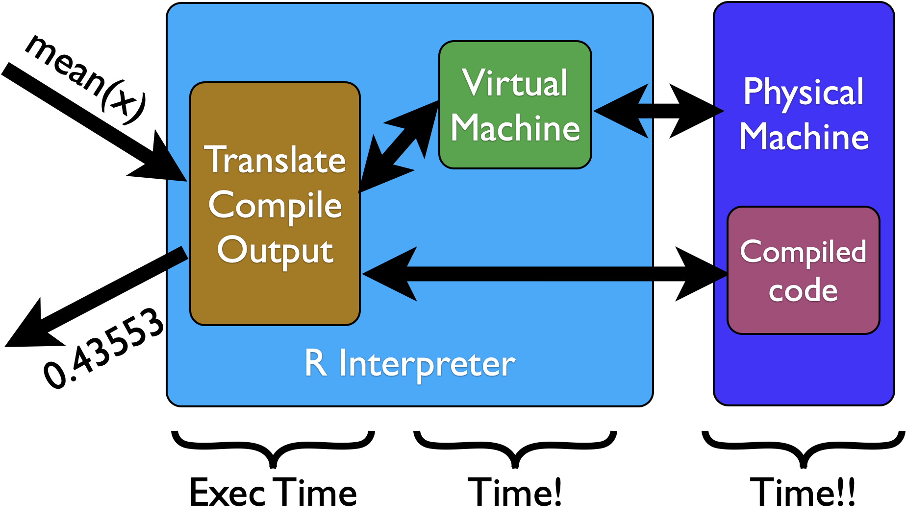

Statistical
Computing
Profiling
Xi (Rossi) LUO
Department of Biostatistics and Data Science
School of Public Health
The University of Texas Health Science Center at Houston
Memory and Speed
- Common theme: large mem, fast exec; low mem, slow exec
- All R objects stored in memory
- Best practice: balance time and space trade-off
Improve Speed
- Optimize R code through vectorization
- Write CPU intensive parts in a compiled language, e.g. C/C++/Fortran
- Using parallel R
For Loop: Misconception
-
for is not necessarily slow - Wrong to claim
apply is faster, also implemented in R - No need to avoid for-loops at all costs
- Vectorization may help improve speed
- Pre-allocation and avoid c/cbind
- Avoid copy-on-modify
For Loop
f_for <- function(k) {
re <- rep(0, k)
for (i in 1:k) {
re[i] <- i^1.5
}
return(re)
}
f_apply <- function(k) {
return(sapply(1:k, function(i) i^1.5))
}
For vs Apply
library(ggplot2)
library(microbenchmark)
mb <- microbenchmark(f_for(1e5), f_apply(1e5))
autoplot(mb)
R System
Compiling
library(compiler)
f_for_cmp <- cmpfun(f_for)
Modern R version actually tries to compile your functions automatically
> f_for
function(k) {
re <- rep(0, k)
for (i in 1:k) {
re[i] <- i^1.5
}
return(re)
}
<bytecode: 0x7f9cd5aaa240>
Vectorization
z <- x + y
for (i in 1:10000) z[i] <- x[i] + y[i]
- The first line call function
+ once, while the second call many functions and some 10000 times - The + function actually written in C
Example
max_norm <- function(nreps) {
sum <- 0
for (i in 1:nreps) {
xy <- rnorm(2)
sum <- sum + max(xy)
}
return(sum/nreps)
}
system.time(max_norm(1e6))
user system elapsed
1.09 0.00 1.10
Small mem but slow exec
Example
max_norm2 <- function(nreps) {
xymat <- matrix(rnorm(2*nreps), ncol = 2)
maxs <- pmax(xymat[,1], xymat[,2])
return(mean(maxs))
}
system.time(max_norm2(1e6))
user system elapsed
0.08 0.00 0.08
Large mem for sotring the matrix, but fast exec
Simpler Data Structure
- Complex data structures (e.g. class) requires more time
- Simpler data structure requires less work for type checking, formatting, and etc
Direct Function Calls
- S3/S4 systems can add some computation time
- R offers various functions for the same purpose
- Some functions are slower (for generic data structures) and some are faster (for specific and simpler data structures)
m <- matrix(rnorm(1e4 * 100), 1e4, 100)
mb <- microbenchmark(apply(m, 1, mean), rowMeans(m))
autoplot(mb)
m <- rnorm(1e4)
mb <- microbenchmark(mean(m), sum(m)/length(m))
autoplot(mb)
Pre-allocation
- Most R data structures are copy-on-modify
- Concatenation crreates multiple copies
- Pre-allocation usually avoid potential copy-on-modify
Parallel
Parallel
- Modern R includes pkg parallel by default
- Many other parallel mechanisms possible via other pkgs
- snow, Rmpi, multicore, ...
- Microsoft R Open has parallel R enabled by default, but may not always improve speed
Types of Parallelism
- Shared mem, multiple cores, usually a single machine
- Open MP
- Multiple machines linked by network
- MPI, message passing
- Parallel frameworks: Hadoop

simu <- function(k) {
set.seed(k)
X <- matrix(rnorm(1e2*1e4), 1e2, 1e4)
b <- rnorm(1e4)
return( sum(X%*%b) )
}
system.time(lapply(1:200, simu))
library(parallel)
system.time(mclapply(1:200, simu, mc.cores = 3))
> system.time(lapply(1:200, simu))
user system elapsed
12.523 0.229 12.760
>
> library(parallel)
> system.time(mclapply(1:200, simu, mc.cores = 3))
user system elapsed
4.181 0.400 4.511
Profiling
- To improve speed, you may want to use
Rprof - Profiling finds the bottle neck or functions that use the most time
- You may want to focus on optimizing the functions that use the most
Example: Matrix Power
powers1 <- function(x,dg) {
pw <- matrix(x,nrow=length(x))
prod <- x # current product
for (i in 2:dg) {
prod <- prod * x
pw <- cbind(pw,prod)
}
return(pw)
}
> x <- runif(1e6)
> Rprof()
> invisible(powers1(x, 8))
> Rprof(NULL)
Example: Matrix Power
> summaryRprof()
$by.self
self.time self.pct total.time total.pct
"cbind" 0.26 81.25 0.26 81.25
"powers1" 0.04 12.50 0.32 100.00
"makeCenv" 0.02 6.25 0.02 6.25
$by.total
total.time total.pct self.time self.pct
"powers1" 0.32 100.00 0.04 12.50
"cbind" 0.26 81.25 0.26 81.25
"makeCenv" 0.02 6.25 0.02 6.25
...
Rprof
-
Rprof saves the function calls in effect every 0.02 (default) seconds -
summaryRprof counts the number of times each function was detected - This can be challenging if calling too many functions
- Alternative packages for visualizing Rprof:
profr, proftools
References
- AoRP: ch 13, 14, 16